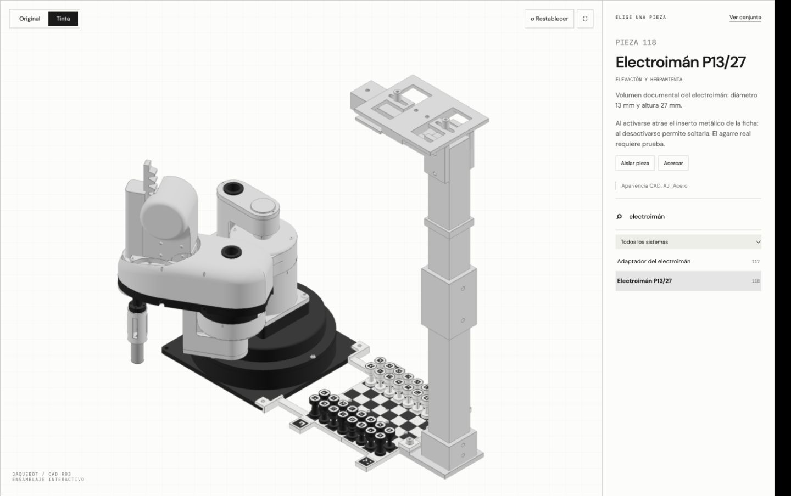
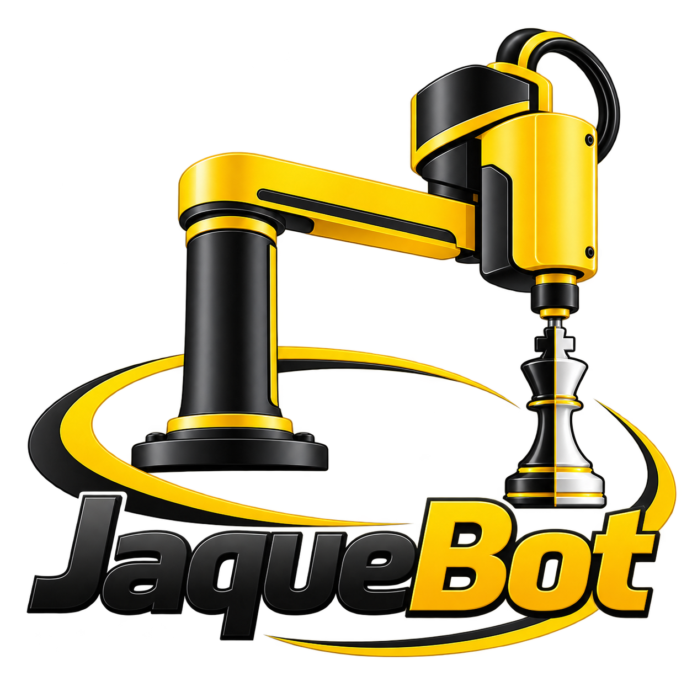

Activa JavaScript para recorrer el modelo 3D. JaqueBot integra un brazo robótico, una app de control manual y una app de ajedrez.
Arrastra para girar. Acerca con la rueda o con dos dedos. Toca una pieza para conocer su función.
Guion por roles. La demostración en vivo y el paso del Gestor al video están incluidos en los 12 minutos. Descarga el texto completo para ensayar cada intervención.